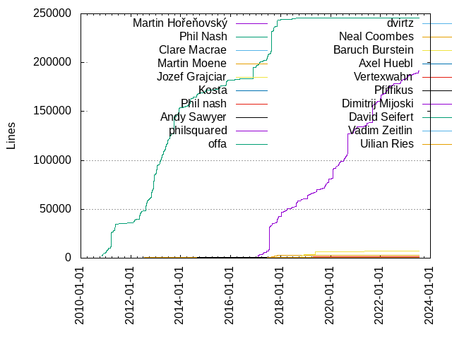
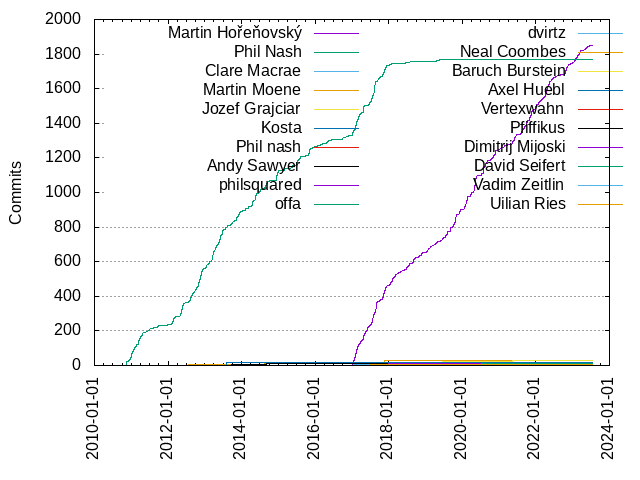

Authors
| Author | Commits (%) | + lines | - lines | First commit | Last commit | Age | Active days | # by commits |
|---|
| Martin Hořeňovský | 1851 (42.68%) | 191288 | 114545 | 2016-11-26 | 2023-07-13 | 2420 days, 1:26:07 | 753 | 1 |
| Phil Nash | 1770 (40.81%) | 246011 | 216914 | 2010-11-09 | 2019-05-20 | 3114 days, 0:41:39 | 597 | 2 |
| Clare Macrae | 31 (0.71%) | 258 | 32 | 2017-10-23 | 2021-04-16 | 1270 days, 23:01:01 | 9 | 3 |
| Martin Moene | 29 (0.67%) | 3111 | 1299 | 2012-07-21 | 2018-09-05 | 2236 days, 1:02:06 | 17 | 4 |
| Jozef Grajciar | 27 (0.62%) | 6894 | 2768 | 2018-10-09 | 2021-05-10 | 944 days, 10:59:23 | 22 | 5 |
| Kosta | 15 (0.35%) | 156 | 31 | 2013-08-05 | 2013-08-06 | 22:35:46 | 2 | 6 |
| Phil nash | 13 (0.30%) | 1286 | 90 | 2019-04-04 | 2019-04-27 | 23 days, 2:56:52 | 4 | 7 |
| Andy Sawyer | 13 (0.30%) | 529 | 87 | 2013-09-17 | 2014-09-03 | 351 days, 2:43:04 | 4 | 8 |
| philsquared | 10 (0.23%) | 59 | 30 | 2017-02-17 | 2018-02-01 | 348 days, 16:30:41 | 7 | 9 |
| offa | 9 (0.21%) | 72 | 43 | 2017-08-31 | 2020-04-29 | 971 days, 13:39:54 | 9 | 10 |
| dvirtz | 8 (0.18%) | 268 | 42 | 2017-03-30 | 2018-02-08 | 315 days, 0:24:44 | 4 | 11 |
| Neal Coombes | 8 (0.18%) | 208 | 94 | 2017-06-21 | 2017-11-17 | 149 days, 1:20:32 | 5 | 12 |
| Baruch Burstein | 8 (0.18%) | 185 | 109 | 2017-06-20 | 2017-07-09 | 18 days, 14:33:51 | 6 | 13 |
| Axel Huebl | 8 (0.18%) | 74 | 73 | 2018-07-12 | 2019-08-06 | 390 days, 11:50:10 | 4 | 14 |
| Vertexwahn | 7 (0.16%) | 200 | 102 | 2022-03-11 | 2023-06-01 | 446 days, 22:53:06 | 7 | 15 |
| Pfiffikus | 7 (0.16%) | 24 | 19 | 2017-10-24 | 2017-11-30 | 36 days, 21:12:36 | 3 | 16 |
| Dimitrij Mijoski | 7 (0.16%) | 84 | 53 | 2021-03-25 | 2022-10-03 | 556 days, 12:31:52 | 6 | 17 |
| David Seifert | 7 (0.16%) | 51 | 29 | 2018-01-17 | 2018-08-18 | 212 days, 22:04:58 | 3 | 18 |
| Vadim Zeitlin | 6 (0.14%) | 76 | 14 | 2012-10-31 | 2023-03-11 | 3782 days, 19:31:41 | 3 | 19 |
| Uilian Ries | 6 (0.14%) | 823 | 619 | 2017-06-23 | 2018-12-29 | 554 days, 8:57:18 | 5 | 20 |
These didn't make it to the top: Reinhold Gschweicher, Daniele E. Domenichelli, Mickey Rose, khyperia, Steven Franzen, Sebastian Grottel, Omer Ozarslan, Martin Jeřábek, Maciej Patro, Holger Kaelberer, Billy Robert O'Neal III, Alexandr Timofeev, Alan Jowett, ptc-tgamper, melak47, amitherman95, Tomas Zeman, Tim Blechmann, Thomas Sondergaard, Sergio Losilla, Sean D. Cline, Rosen Penev, Robin Moussu, Richard Ash, Morwenn, Kochetkov, Yuriy, John Bytheway, John Beard, JoeyGrajciar, Igor Akhmetov, Chris Thrasher, solvingj, schallerr, mlimber, mheimlich, lbckmnn, hbina4326, gnzlbg, ctt, Wichert Akkerman, Tristan Stenner, Torfinn Berset, Simon Warta, Sean Middleditch, Scott Hutchinson, Ryan Pavlik, Riom, Raphael Schaller, Philip Salzmann, Paul le Roux, Paul Dreik, NeroBurner, Monocasual, Mike Cowan, Michael Mortensen, Matt Wozniski, Martin Hostettler, Markus Werle, Markus Reitboeck, Mark Gillard, Marcus Näslund, Lotte Steenbrink, Khem Raj, Kevin Wojniak, Kevin Ushey, Julius Hülsmann, Jonathan B. Coe, Joel Uckelman, Joel Bradshaw, Joe Burzinski, Joachim Meyer, Jayesh Badwaik (FZ Juelich), Jamie Bullock, Ivan Kush, Guillaume Egles, George Xanthakis, George Fotopoulos, Fraser Hutchison, Fran García Salomón, Florian Berchtold, Ernst Maurer, Dmitry Kozhevnikov, Danila Sukharev, Daniel J. Hofmann, Daniel Feist, Cristian Morales Vega, Corentin Jabot, Christopher Di Bella, BiCapitalization, Benjamin Worpitz, Ben Arnold, Anton Vorobyev, Anders Schau Knatten, Alex Glyde, wqking, wimo7083, twhittock, tocic, thecppzoo, sp-dani-garcia, socantre, segalaj, pi1024e, nabijaczleweli, mrbald, mattkurz, matthew-limbinar, magnus.ornebring, m0ppers, lbersch, laoshanxi, kotaiadam, jushar, jsc, jbo-ableton, herringbanger@gmail.com, geh, garethsb-sony, faulda, data-man, csa, cnugteren, cericks0n, cat_mint, bogdasar1985, balus, autoantwort, andrew morton, ahans, Zsolt Parragi, Ziv Shahaf, Zhihao Yuan, Zhi Wang, Zachary Michaels, Yurii Nakonechnyi, Yaroslav, Wu Yuanshou, Wim Leflere, Will Pazner, Will Handley, Vishesh Yadav, Victor, Valeri, Valentin Tolmer, Uriel García Rivas, Unknown, TrueWodzu, Trevor Hickey, Travis Wilson, Tommy Carozzani, Tom de Geus, Tom Hughes, Tobias Widlund, Tobias Weibel, Tobias Ribizel, Till Hofmann, ThePhD, Teskann, Tadeusz Puźniakowski, Stuart Dootson, Steve Hollasch, Stephen Newell, Stephen McDowell, Stephane Del Pino, Stefan Rommel, SketchyLizard, SimonChh, Simon Weis, Sergio Arroutbi, Sergey Semushin, Sergey Fedorov, Sergey Evsegneev, Sam James, Sam Cunliffe, Sam Bristow, Saad K, Rémy Salim, Rutayan Patro, Rupert Steel, Ross Bencina, Roman Proskuryakov, Roland Kaminski, Rohit Goswami, Roger Standridge, Rodrigo Severo, Roc, Robin Lindén, Robin Christ, Robert Dailey, Robert Blaauboer, Robert Andrzejuk, Robert A Zeh, Rob Boehne, Rick de Water, Rian Quinn, Rafael Eyng, RT222, Pietro Cerutti, Phoebe, Philipp Claßen, Petter Strandmark, Petr Ledvina, Petr Kubánek, Peter Huene, Pavel Kamenov, Paul Lesur, Patrick Junger, Palotás Boldizsár, Norbert Wenzel, Nils Deppe, Nikolaus Wittenstein, Niels Kristian Kjærgård Madsen, Nicolas Dusart, Nexus Web Development, Natsu, Nathaniel Dosé, Murray Johnson, Moritz Haase, Mike Crowe, Mike, Miguel Gaio, Michał Janiszewski, Michael Vlach, Mertz, Arne, Matthias Moulin, Matthias Blankertz, Matthew Parnell, Matteo Beniamino, Matt Rubin, Matt Godbolt, Matt Clarke, Mateusz Łoskot, Masashi Fujita, Martin Stump, Martin Luelf, Marek Klus, Manuel Drews, Malcolm Noyes, MaciejPatro, Lyashenko Arsenii Maksimovich, Lukasz Okraszewski, Liam Keegan, Lars Toenning, Kylo Ginsberg, Konrad Rudolph, Kin Numaru, Kevin Granade, Karthik Nishanth, Kamil Kisiel, Jędrzej, Justin Wilson, Justin Bassett, Julien Nitard, Julien Brianceau, Joshua Gerrard, Josh Soref, Josh Lospinoso, Joseph Schrag, Josef Kemetmueller, Jonathan Wright, Jonathan Vander Mey, Jonathan Coe, John Zimmermann, John Else, Joe Noël, Jesse Alas, Jayesh Badwaik, JayAndCatchFire, Jardel Weyrich, Jan Včelák, James Wilkinson, Invincible, Igor Murashkin, Ian Hattendorf, Ian Copland, Henry Schreiner, Haowei Hsu, Hannes Kaeufler, Gregory Bond, GravisZro, Graham Lee, Girts Folkmanis, George Rhoten, Georg Schwab, Geoffrey M Gunter, Gavin S, Frank Dana, Fabien Caylus, Eric Schmidt, Eric Huber, Emil Jarosz, Emery Goss (AIVAS-v2:Ubuntu-20.04), Elizabeth Sherrock, Eldar Zakirov, Eddie, Dawid Kurek, David Sommerich, David Grayson, David Beckley, David Aue, Darren Gilroy, Daniel J. Rollins, Daniel Griscom, Daniel Edwards, Daniel Doubleday, Dan Nissenbaum, Damjan Jelas, Czapa10, Colton Wolkins (Ogre), Cody Han, Christian Berger, Certseeds, CNugteren, Brandon Jones, Bob Miller, Björn Schäpers, Biswapriyo Nath, Bernhard Manfred Gruber, Berkus Karchebnyy, Benjamin Schmithüsen, Benjamin R. Jack, Ben Gray, Ben Dunkin, Bastian Dörig, Baruch, Barry, Austin L Wolfgram, Augustas, Arne Mertz, Arash Badie-Modiri, Antonio Mallia, Antonio Di Monaco, Antonio Borondo, Antoine Wendlinger, Anthony Super, Ansel Sermersheim, Andy Balaam, Andrew Gaspar, Ali-Amir Aldan, Alexis Jeandet, Alexander Stein, Alexander Shaduri, Alexander Ryabykin, Alexander Manenko, Alexander Batischev, Alex Voicu, Alex Moreno, Alex Alabuzhev, Alecto Irene Perez, AlCash07, Aivars Kalvans, Adam Strzelecki, Aaron Simmons, AMS21
Only top 20 authors shown
Only top 20 authors shown
| Month | Author | Commits (%) | Next top 5 | Number of authors |
|---|
| 2023-07 | Martin Hořeňovský | 3 (75.00% of 4) | Riom | 2 |
| 2023-06 | Martin Hořeňovský | 4 (66.67% of 6) | Vertexwahn, Robin Christ | 3 |
| 2023-05 | Martin Hořeňovský | 17 (73.91% of 23) | Yaroslav, Valeri, ThePhD, Cristian Morales Vega, Chris Thrasher | 7 |
| 2023-04 | Martin Hořeňovský | 7 (53.85% of 13) | Holger Kaelberer, Vertexwahn, Arne Mertz | 4 |
| 2023-03 | Martin Hořeňovský | 22 (84.62% of 26) | Vadim Zeitlin, jushar, Bob Miller | 4 |
| 2023-02 | Martin Hořeňovský | 27 (90.00% of 30) | Vertexwahn, Kamil Kisiel, Jayesh Badwaik (FZ Juelich) | 4 |
| 2023-01 | Martin Hořeňovský | 21 (72.41% of 29) | TrueWodzu, Tommy Carozzani, Sergey Fedorov, Sam James, Philip Salzmann | 9 |
| 2022-12 | Martin Hořeňovský | 11 (78.57% of 14) | lbckmnn, Chris Thrasher | 3 |
| 2022-11 | Martin Hořeňovský | 23 (76.67% of 30) | mrbald, Vertexwahn, Sergio Arroutbi, Rosen Penev, Robert Blaauboer | 8 |
| 2022-10 | Martin Hořeňovský | 34 (72.34% of 47) | Tim Blechmann, autoantwort, Teskann, Sam Cunliffe, Rosen Penev | 13 |
| 2022-09 | Martin Hořeňovský | 4 (23.53% of 17) | Dimitrij Mijoski, Vertexwahn, tocic, Zhi Wang, Tim Blechmann | 10 |
| 2022-08 | Martin Hořeňovský | 5 (100.00% of 5) | | 1 |
| 2022-07 | Martin Hořeňovský | 6 (50.00% of 12) | mheimlich, Niels Kristian Kjærgård Madsen, Haowei Hsu, Dimitrij Mijoski, Damjan Jelas | 6 |
| 2022-06 | Martin Hořeňovský | 21 (65.62% of 32) | Sergio Losilla, balus, ahans, Nexus Web Development, Murray Johnson | 11 |
| 2022-05 | Martin Hořeňovský | 35 (97.22% of 36) | Petr Kubánek | 2 |
| 2022-04 | Martin Hořeňovský | 56 (96.55% of 58) | Lukasz Okraszewski, Daniel Feist | 3 |
| 2022-03 | Martin Hořeňovský | 17 (68.00% of 25) | wqking, schallerr, Vertexwahn, Kochetkov, Yuriy, John Beard | 9 |
| 2022-02 | Martin Hořeňovský | 16 (76.19% of 21) | Kochetkov, Yuriy, John Beard, Guillaume Egles, GravisZro, Certseeds | 6 |
| 2022-01 | Martin Hořeňovský | 28 (90.32% of 31) | Simon Weis, Rodrigo Severo, Kochetkov, Yuriy | 4 |
| 2021-12 | Martin Hořeňovský | 25 (89.29% of 28) | Alan Jowett | 2 |
| 2021-11 | Martin Hořeňovský | 38 (88.37% of 43) | Raphael Schaller, Tristan Stenner, SketchyLizard, Morwenn | 5 |
| 2021-10 | Martin Hořeňovský | 28 (96.55% of 29) | Alecto Irene Perez | 2 |
| 2021-09 | Martin Hořeňovský | 32 (88.89% of 36) | Anders Schau Knatten, Biswapriyo Nath, Bernhard Manfred Gruber | 4 |
| 2021-08 | Martin Hořeňovský | 29 (90.62% of 32) | Roc, Kin Numaru, Geoffrey M Gunter | 4 |
| 2021-07 | Martin Hořeňovský | 6 (85.71% of 7) | Ben Dunkin | 2 |
| 2021-06 | Martin Hořeňovský | 17 (89.47% of 19) | Vishesh Yadav, Jayesh Badwaik (FZ Juelich) | 3 |
| 2021-05 | Martin Hořeňovský | 40 (95.24% of 42) | Jozef Grajciar, Daniel Edwards | 3 |
| 2021-04 | Martin Hořeňovský | 2 (33.33% of 6) | Matteo Beniamino, Julien Brianceau, Georg Schwab, Clare Macrae | 5 |
| 2021-03 | Martin Hořeňovský | 6 (46.15% of 13) | Martin Jeřábek, matthew-limbinar, Pavel Kamenov, Jozef Grajciar, Dimitrij Mijoski | 7 |
| 2021-02 | Martin Hořeňovský | 11 (84.62% of 13) | Rohit Goswami, Martin Jeřábek | 3 |
| 2021-01 | Martin Hořeňovský | 8 (72.73% of 11) | Tom de Geus, Scott Hutchinson, Rob Boehne | 4 |
| 2020-12 | Martin Hořeňovský | 11 (50.00% of 22) | Reinhold Gschweicher, cat_mint, Uriel García Rivas, Roman Proskuryakov, Robert Andrzejuk | 11 |
| 2020-11 | Martin Hořeňovský | 40 (88.89% of 45) | George Xanthakis, Sergio Losilla, Emil Jarosz, AMS21 | 5 |
| 2020-10 | Martin Hořeňovský | 18 (50.00% of 36) | Clare Macrae, Reinhold Gschweicher, Alexandr Timofeev, laoshanxi, Rémy Salim | 11 |
| 2020-09 | Martin Hořeňovský | 7 (43.75% of 16) | Paul Dreik, kotaiadam, Will Pazner, Matt Godbolt, Martin Stump | 9 |
| 2020-08 | Martin Hořeňovský | 35 (87.50% of 40) | mattkurz, Travis Wilson, Sean Middleditch, Gregory Bond, Dawid Kurek | 6 |
| 2020-07 | Martin Hořeňovský | 30 (81.08% of 37) | Corentin Jabot, Reinhold Gschweicher, Karthik Nishanth, George Rhoten, Gavin S | 7 |
| 2020-06 | Martin Hořeňovský | 7 (58.33% of 12) | Richard Ash, Ryan Pavlik, Matthias Blankertz | 4 |
| 2020-05 | Martin Hořeňovský | 75 (94.94% of 79) | bogdasar1985, Valentin Tolmer, Natsu, Billy Robert O'Neal III | 5 |
| 2020-04 | Martin Hořeňovský | 25 (75.76% of 33) | John Bytheway, schallerr, offa, Moritz Haase, John Else | 7 |
| 2020-03 | Martin Hořeňovský | 28 (75.68% of 37) | Mark Gillard, Julius Hülsmann, pi1024e, magnus.ornebring, Phoebe | 8 |
| 2020-02 | Martin Hořeňovský | 50 (84.75% of 59) | offa, khyperia, Clare Macrae, melak47, Tristan Stenner | 7 |
| 2020-01 | Martin Hořeňovský | 16 (66.67% of 24) | offa, khyperia, Rosen Penev, Daniel Griscom, Alexandr Timofeev | 6 |
| 2019-12 | Martin Hořeňovský | 24 (85.71% of 28) | ptc-tgamper, Joe Burzinski | 3 |
| 2019-11 | Martin Hořeňovský | 24 (92.31% of 26) | cericks0n, Joe Burzinski | 3 |
| 2019-10 | Martin Hořeňovský | 46 (79.31% of 58) | Jozef Grajciar, amitherman95, data-man, Wim Leflere, RT222 | 10 |
| 2019-09 | Martin Hořeňovský | 31 (91.18% of 34) | amitherman95, Matthias Moulin, Benjamin Schmithüsen | 4 |
| 2019-08 | Martin Hořeňovský | 17 (68.00% of 25) | Steven Franzen, sp-dani-garcia, Jonathan Vander Mey, Jesse Alas, Benjamin Worpitz | 8 |
| 2019-07 | Martin Hořeňovský | 19 (45.24% of 42) | Clare Macrae, Stuart Dootson, Steven Franzen, Mike Cowan, Joachim Meyer | 8 |
| 2019-06 | Martin Hořeňovský | 27 (87.10% of 31) | Steven Franzen, Scott Hutchinson, Justin Bassett, David Sommerich | 5 |
| 2019-05 | Martin Hořeňovský | 11 (39.29% of 28) | Jozef Grajciar, Phil Nash, mlimber, geh, Petr Ledvina | 8 |
| 2019-04 | Phil nash | 13 (27.08% of 48) | Martin Hořeňovský, Phil Nash, Jozef Grajciar, JoeyGrajciar, Joel Bradshaw | 17 |
| 2019-03 | Martin Hořeňovský | 11 (42.31% of 26) | Daniele E. Domenichelli, Clare Macrae, Yurii Nakonechnyi, Tadeusz Puźniakowski, Steve Hollasch | 9 |
| 2019-02 | Martin Hořeňovský | 11 (42.31% of 26) | Omer Ozarslan, Jozef Grajciar, hbina4326, Tobias Ribizel, Rick de Water | 13 |
| 2019-01 | Martin Hořeňovský | 24 (55.81% of 43) | Jozef Grajciar, Robin Moussu, Axel Huebl, NeroBurner, Lotte Steenbrink | 11 |
| 2018-12 | Martin Hořeňovský | 2 (28.57% of 7) | hbina4326, Uilian Ries, Khem Raj, Jozef Grajciar, BiCapitalization | 6 |
| 2018-11 | Martin Hořeňovský | 21 (67.74% of 31) | Jozef Grajciar, Uilian Ries, thecppzoo, offa, Nicolas Dusart | 8 |
| 2018-10 | Martin Hořeňovský | 5 (33.33% of 15) | Maciej Patro, Jozef Grajciar, Stephane Del Pino, Miguel Gaio, MaciejPatro | 8 |
| 2018-09 | Martin Hořeňovský | 26 (83.87% of 31) | melak47, wimo7083, Mike Cowan, Martin Moene | 5 |
| 2018-08 | Martin Hořeňovský | 12 (63.16% of 19) | Axel Huebl, Matthew Parnell, Igor Murashkin, George Fotopoulos, David Seifert | 6 |
| 2018-07 | Martin Hořeňovský | 23 (88.46% of 26) | Unknown, Guillaume Egles, Axel Huebl | 4 |
| 2018-06 | Phil Nash | 16 (48.48% of 33) | Martin Hořeňovský, Paul le Roux, Stephen McDowell | 4 |
| 2018-05 | Martin Hořeňovský | 7 (41.18% of 17) | Markus Reitboeck, Christopher Di Bella, Rupert Steel, Lyashenko Arsenii Maksimovich, Julien Nitard | 9 |
| 2018-04 | Martin Hořeňovský | 14 (63.64% of 22) | Marcus Näslund, Tom Hughes, Palotás Boldizsár, Ian Hattendorf, Christian Berger | 8 |
| 2018-03 | Martin Hořeňovský | 17 (73.91% of 23) | Tomas Zeman, jsc, Zsolt Parragi, Josh Soref, David Aue | 6 |
| 2018-02 | Martin Hořeňovský | 29 (78.38% of 37) | dvirtz, philsquared, Zachary Michaels, Tomas Zeman, Phil Nash | 8 |
| 2018-01 | Martin Hořeňovský | 23 (51.11% of 45) | Phil Nash, David Seifert, philsquared, Josh Lospinoso, George Fotopoulos | 8 |
| 2017-12 | Martin Hořeňovský | 17 (56.67% of 30) | Phil Nash, garethsb-sony, Dan Nissenbaum | 4 |
| 2017-11 | Martin Hořeňovský | 52 (44.44% of 117) | Phil Nash, Martin Moene, Neal Coombes, lbersch, Pfiffikus | 8 |
| 2017-10 | Martin Hořeňovský | 20 (43.48% of 46) | Phil Nash, Pfiffikus, Sebastian Grottel, Martin Moene, dvirtz | 8 |
| 2017-09 | Phil Nash | 20 (57.14% of 35) | Martin Hořeňovský, Dmitry Kozhevnikov, offa | 4 |
| 2017-08 | Phil Nash | 83 (46.89% of 177) | Martin Hořeňovský, Martin Moene, solvingj, Monocasual, Danila Sukharev | 9 |
| 2017-07 | Martin Hořeňovský | 48 (51.61% of 93) | Phil Nash, Baruch Burstein, Ivan Kush, Fran García Salomón, Anton Vorobyev | 6 |
| 2017-06 | Martin Hořeňovský | 32 (46.38% of 69) | Phil Nash, Neal Coombes, Uilian Ries, Baruch Burstein, Markus Werle | 7 |
| 2017-05 | Martin Hořeňovský | 27 (65.85% of 41) | dvirtz, Thomas Sondergaard, Phil Nash, twhittock, Patrick Junger | 9 |
| 2017-04 | Phil Nash | 44 (50.57% of 87) | Martin Hořeňovský, Ernst Maurer, Sergey Semushin, JayAndCatchFire, Alexander Batischev | 6 |
| 2017-03 | Phil Nash | 34 (44.74% of 76) | Martin Hořeňovský, philsquared, Mickey Rose, Alex Glyde, m0ppers | 12 |
| 2017-02 | Martin Hořeňovský | 56 (47.86% of 117) | Phil Nash, philsquared, Marek Klus, Kevin Wojniak, Justin Wilson | 6 |
| 2017-01 | Martin Hořeňovský | 47 (51.65% of 91) | Phil Nash, Mickey Rose, Saad K, Joshua Gerrard, Josef Kemetmueller | 8 |
| 2016-12 | Martin Hořeňovský | 2 (50.00% of 4) | andrew morton, Igor Akhmetov | 3 |
| 2016-11 | Phil Nash | 10 (76.92% of 13) | Martin Hořeňovský | 2 |
| 2016-10 | Phil Nash | 5 (62.50% of 8) | Billy Robert O'Neal III | 2 |
| 2016-09 | Phil Nash | 9 (81.82% of 11) | Jonathan B. Coe | 2 |
| 2016-08 | Robert A Zeh | 1 (33.33% of 3) | Igor Akhmetov, Antoine Wendlinger | 3 |
| 2016-07 | nabijaczleweli | 1 (50.00% of 2) | faulda | 2 |
| 2016-06 | Phil Nash | 6 (85.71% of 7) | Victor | 2 |
| 2016-05 | Phil Nash | 8 (72.73% of 11) | Jonathan Coe, Eldar Zakirov, Daniel J. Hofmann | 4 |
| 2016-04 | Phil Nash | 8 (66.67% of 12) | Robert Dailey, Rafael Eyng, Kevin Ushey, Eric Schmidt | 5 |
| 2016-03 | Phil Nash | 4 (57.14% of 7) | Ross Bencina, Ian Copland, David Grayson | 4 |
| 2016-02 | Phil Nash | 9 (64.29% of 14) | Vadim Zeitlin, Trevor Hickey, Sean Middleditch | 4 |
| 2016-01 | Phil Nash | 5 (100.00% of 5) | | 1 |
| 2015-12 | Phil Nash | 10 (100.00% of 10) | | 1 |
| 2015-11 | Phil Nash | 29 (93.55% of 31) | cnugteren, CNugteren | 3 |
| 2015-10 | Phil Nash | 12 (80.00% of 15) | Jędrzej, Daniel J. Hofmann, Colton Wolkins (Ogre) | 4 |
| 2015-09 | Phil Nash | 6 (85.71% of 7) | segalaj | 2 |
| 2015-08 | Phil Nash | 12 (85.71% of 14) | Simon Warta | 2 |
| 2015-07 | Phil Nash | 31 (93.94% of 33) | jbo-ableton, csa | 3 |
| 2015-06 | Phil Nash | 9 (81.82% of 11) | Philipp Claßen, Kylo Ginsberg | 3 |
| 2015-05 | Phil Nash | 16 (100.00% of 16) | | 1 |
| 2015-04 | Nikolaus Wittenstein | 1 (50.00% of 2) | Baruch | 2 |
| 2015-03 | Phil Nash | 15 (93.75% of 16) | socantre | 2 |
| 2015-02 | Peter Huene | 1 (100.00% of 1) | | 1 |
| 2014-12 | Phil Nash | 55 (100.00% of 55) | | 1 |
| 2014-11 | Jamie Bullock | 2 (100.00% of 2) | | 1 |
| 2014-10 | Phil Nash | 11 (73.33% of 15) | Sean D. Cline, Tobias Widlund | 3 |
| 2014-09 | Phil Nash | 20 (64.52% of 31) | Andy Sawyer, Anthony Super | 3 |
| 2014-08 | Phil Nash | 19 (70.37% of 27) | Martin Moene, Ben Arnold, Andy Balaam | 4 |
| 2014-07 | Phil Nash | 18 (90.00% of 20) | James Wilkinson, Fabien Caylus | 3 |
| 2014-06 | Phil Nash | 12 (92.31% of 13) | Alex Moreno | 2 |
| 2014-05 | Phil Nash | 39 (95.12% of 41) | Zhihao Yuan, Joseph Schrag | 3 |
| 2014-04 | Phil Nash | 33 (100.00% of 33) | | 1 |
| 2014-03 | Phil Nash | 12 (66.67% of 18) | Martin Moene, gnzlbg, David Beckley, Alexander Manenko, Aaron Simmons | 6 |
| 2014-02 | Phil Nash | 11 (100.00% of 11) | | 1 |
| 2014-01 | Phil Nash | 5 (100.00% of 5) | | 1 |
| 2013-12 | Phil Nash | 27 (100.00% of 27) | | 1 |
| 2013-11 | Phil Nash | 24 (85.71% of 28) | gnzlbg, Tobias Weibel, Petter Strandmark, Adam Strzelecki | 5 |
| 2013-10 | Phil Nash | 17 (89.47% of 19) | Fraser Hutchison | 2 |
| 2013-09 | Phil Nash | 12 (80.00% of 15) | Andy Sawyer | 2 |
| 2013-08 | Kosta | 15 (51.72% of 29) | Phil Nash | 2 |
| 2013-07 | Phil Nash | 19 (100.00% of 19) | | 1 |
| 2013-06 | Phil Nash | 47 (97.92% of 48) | Ben Gray | 2 |
| 2013-05 | Phil Nash | 36 (100.00% of 36) | | 1 |
| 2013-04 | Phil Nash | 41 (100.00% of 41) | | 1 |
| 2013-03 | Phil Nash | 53 (100.00% of 53) | | 1 |
| 2013-02 | Phil Nash | 17 (100.00% of 17) | | 1 |
| 2013-01 | Phil Nash | 24 (100.00% of 24) | | 1 |
| 2012-12 | Phil Nash | 27 (100.00% of 27) | | 1 |
| 2012-11 | Phil Nash | 58 (98.31% of 59) | Wichert Akkerman | 2 |
| 2012-10 | Phil Nash | 38 (97.44% of 39) | Vadim Zeitlin | 2 |
| 2012-09 | Phil Nash | 23 (92.00% of 25) | Matt Wozniski | 2 |
| 2012-08 | Phil Nash | 42 (100.00% of 42) | | 1 |
| 2012-07 | Phil Nash | 11 (73.33% of 15) | Martin Moene | 2 |
| 2012-06 | Phil Nash | 13 (100.00% of 13) | | 1 |
| 2012-05 | Phil Nash | 62 (95.38% of 65) | Malcolm Noyes, Konrad Rudolph, Graham Lee | 4 |
| 2012-04 | Phil Nash | 4 (80.00% of 5) | Jardel Weyrich | 2 |
| 2012-03 | Phil Nash | 9 (100.00% of 9) | | 1 |
| 2012-02 | Phil Nash | 35 (100.00% of 35) | | 1 |
| 2012-01 | herringbanger@gmail.com | 1 (100.00% of 1) | | 1 |
| 2011-12 | Phil Nash | 7 (100.00% of 7) | | 1 |
| 2011-09 | Phil Nash | 12 (92.31% of 13) | Wichert Akkerman | 2 |
| 2011-08 | Phil Nash | 7 (100.00% of 7) | | 1 |
| 2011-07 | Phil Nash | 5 (100.00% of 5) | | 1 |
| 2011-06 | Phil Nash | 12 (100.00% of 12) | | 1 |
| 2011-05 | Phil Nash | 4 (100.00% of 4) | | 1 |
| 2011-04 | Phil Nash | 30 (100.00% of 30) | | 1 |
| 2011-03 | Phil Nash | 39 (95.12% of 41) | ctt | 2 |
| 2011-02 | Phil Nash | 24 (96.00% of 25) | Matt Rubin | 2 |
| 2011-01 | Phil Nash | 35 (100.00% of 35) | | 1 |
| 2010-12 | Phil Nash | 36 (94.74% of 38) | Michael Mortensen | 2 |
| 2010-11 | Phil Nash | 27 (100.00% of 27) | | 1 |
| Year | Author | Commits (%) | Next top 5 | Number of authors |
|---|
| 2023 | Martin Hořeňovský | 101 (77.10% of 131) | Holger Kaelberer, Vertexwahn, Vadim Zeitlin, Chris Thrasher, jushar | 24 |
| 2022 | Martin Hořeňovský | 256 (78.05% of 328) | Dimitrij Mijoski, Vertexwahn, Tim Blechmann, Kochetkov, Yuriy, mheimlich | 55 |
| 2021 | Martin Hořeňovský | 242 (86.74% of 279) | Martin Jeřábek, Alan Jowett, Raphael Schaller, Jozef Grajciar, Anders Schau Knatten | 31 |
| 2020 | Martin Hořeňovský | 342 (77.73% of 440) | Clare Macrae, offa, Reinhold Gschweicher, khyperia, Alexandr Timofeev | 67 |
| 2019 | Martin Hořeňovský | 257 (61.93% of 415) | Clare Macrae, Jozef Grajciar, Phil nash, Phil Nash, Daniele E. Domenichelli | 71 |
| 2018 | Martin Hořeňovský | 193 (63.07% of 306) | Phil Nash, David Seifert, Jozef Grajciar, Axel Huebl, Uilian Ries | 58 |
| 2017 | Martin Hořeňovský | 455 (46.48% of 979) | Phil Nash, Martin Moene, philsquared, Neal Coombes, Baruch Burstein | 52 |
| 2016 | Phil Nash | 64 (65.98% of 97) | Martin Hořeňovský, Vadim Zeitlin, Billy Robert O'Neal III, Jonathan B. Coe, Igor Akhmetov | 24 |
| 2015 | Phil Nash | 140 (89.74% of 156) | Simon Warta, socantre, segalaj, jbo-ableton, csa | 16 |
| 2014 | Phil Nash | 235 (86.72% of 271) | Andy Sawyer, Martin Moene, Sean D. Cline, Jamie Bullock, Ben Arnold | 18 |
| 2013 | Phil Nash | 331 (92.98% of 356) | Kosta, Andy Sawyer, Fraser Hutchison, gnzlbg, Tobias Weibel | 9 |
| 2012 | Phil Nash | 322 (96.12% of 335) | Martin Moene, Matt Wozniski, herringbanger@gmail.com, Wichert Akkerman, Vadim Zeitlin | 10 |
| 2011 | Phil Nash | 175 (97.77% of 179) | ctt, Wichert Akkerman, Matt Rubin | 4 |
| 2010 | Phil Nash | 63 (96.92% of 65) | Michael Mortensen | 2 |
| Domains | Total (%) |
|---|
| gmail.com | 2102 (48.47%) |
|---|
| philnash.me | 1563 (36.04%) |
|---|
| twobluecubes.com | 230 (5.30%) |
|---|
| users.noreply.github.com | 69 (1.59%) |
|---|
| cfmacrae.fastmail.co.uk | 31 (0.71%) |
|---|
| ks-baumann.de | 15 (0.35%) |
|---|
| hotmail.com | 14 (0.32%) |
|---|
| pureabstract.org | 13 (0.30%) |
|---|
| yandex.com | 9 (0.21%) |
|---|
| microsoft.com | 9 (0.21%) |
|---|